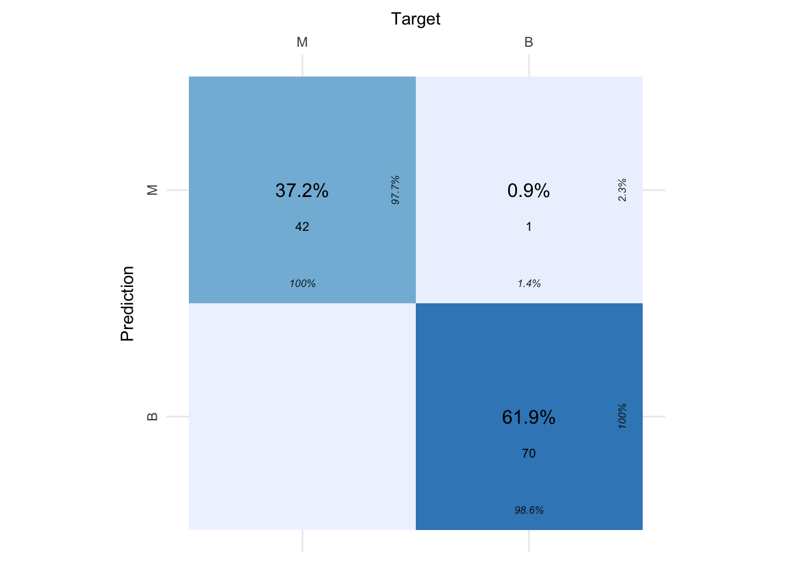
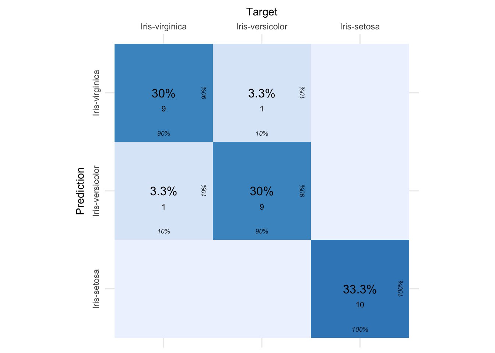
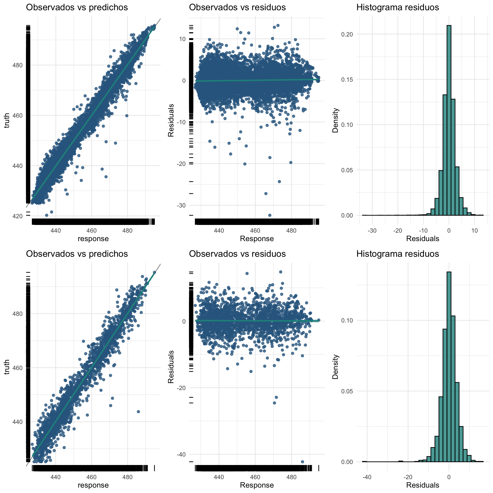
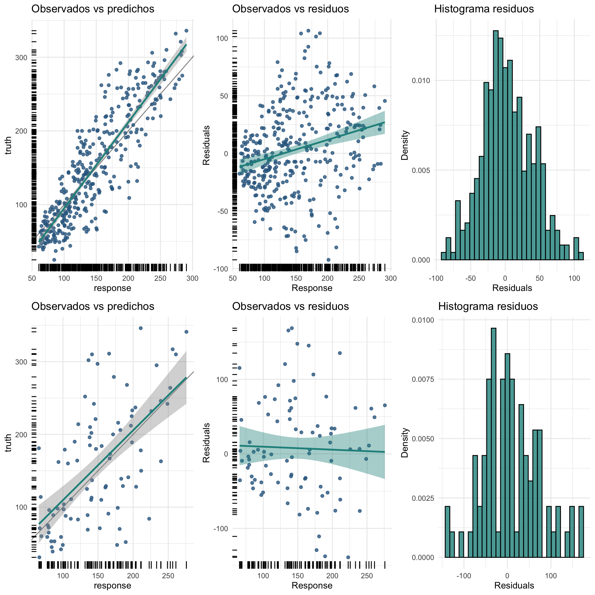
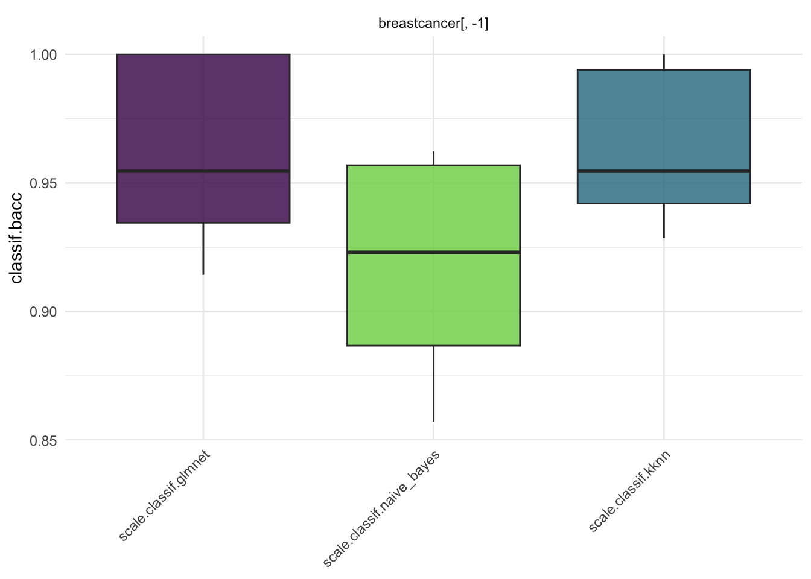

# Paquetes anteriores
library(tidyverse)
library(sjPlot)
library(knitr) # para formatos de tablas
library(skimr)
library(DataExplorer)
library(GGally)
library(gridExtra)
library(ggpubr)
library(cvms)
library(kknn)
theme_set(theme_sjplot2())
# Paquetes AA
library(mlr3verse)
library(mlr3tuning)
library(mlr3tuningspaces)10 Modelo de los k vecinos más cercanos (kNN)
El algoritmo de los k vecinos más cercanos (k-NN) es un algoritmo de aprendizaje automático que pertenece a los algoritmos de aprendizaje supervisado simples y fáciles de aplicar. Estos pueden ser utilizados para resolver problemas de clasificación y de regresión.
Este algoritmo utiliza el concepto de proximidad para hacer clasificaciones o predicciones sobre un punto de la muestra de validación a partir de los k vecinos más cercanos de la muestra de entrenamiento. En los problemas de clasificación, el algoritmo k-NN calcula la probabilidad de que los datos de prueba pertenezcan a las clases de los ‘k’ datos de entrenamiento más cercanos y se asignará la clase que tenga la mayor probabilidad de ocurrencia. En el caso de la regresión, el valor utilizado es la media de los ‘k’ puntos de entrenamiento seleccionados.
El aprendizaje del algoritmo es:
Aprendizaje basado en memoria: aquí no estimamos pesos a partir de los datos de entrenamiento para predecir la respuesta (como en los algoritmos basados en modelos) sino que utilizamos los valores completos de entrenamiento para predecir la salida de los datos de validación.
Aprendizaje perezoso: el proceso de aprendizaje se pospone a un momento en el que se solicita la predicción sobre una nueva observación que se desea clasificar o predecir.
No paramétrico: en k-NN, no hay una forma predefinida para obtener una función para la clasificación o regresión ya que esta depende de los datos de entrenamiento el valor de k seleccionado.
Las mayores aplicaciones del k-NN son en sistemas de recomendación simples, reconocimiento de patrones, extracción de datos, predicciones del mercado financiero, detección de intrusos y más.
Aunque nos vamos a centrar algo más en los problemas de clasificación a la hora de mostrar el funcionamiento del algoritmo kNN, trabajaremos posteriormente con problemas de regresión donde pueden ser utilizados. Para poder utilizar estos algoritmos es necesario instalar la librería kknn.
En el código siguiente se cargan los paquetes y la configuración básica para este tipo de modelos.
10.1 Etapas del algorirmo kNN
Imaginemos que tenemos una matriz de predictoras \(X\) y un vector de respuestas \(y\), de tipo categórico para un problema de clasificación (o de tipo numérico para un problema de regresión), de forma que dividimos el conjunto de muestras en entrenamiento y validación:
\[X = (X_e, X_v); \quad y = (y_e, y_v)\]
La lógica de funcionamiento detrás del algoritmo k-NN es una de las más sencillas de todos los algoritmos de aprendizaje automático supervisados y se organiza a través de las etapas siguientes:
Etapa 1. Fijar valor de k. Establecer el número de k vecinos que vamos a utilizar.
Etapa 2. Obtención de distancias. Se establece una distancia \(d\), y se calcula la distancia de todos los elementos de la muestra de entrenamiento con respecto a cada uno de los elementos de la muestra de validación utilizando para ello las variables predictoras:
\[d_v= d(X_e,X_v).\]
donde \(d_v\) es una matriz de dimensiones igual a muestras de entrenamiento por muestras de validación.
Etapa 3. Identificación de k vecinos. Para cada una de las muestras del conjunto de validación se deben seleccionar los k vecinos más cercanos (basado en las distancias de la etapa 2) de la muestra de entrenamiento. Debemos tomar los k elementos con menor valor de distancia para cada una de las columnas de \(d_v\) e identificar dichas observaciones para seleccionar los correspondientes valores del vector \(y_e\).
Etapa 4. Predicción. Para un problema de clasificación se establece la etiqueta mayoritaria de la variable respuesta dentro de los k vecinos seleccionados para cada una de las muestras de validación, y se asigna como respuesta dicho valor, es decir, se calcula la frecuencia de cada valor de la respuesta para el conjunto de k vecinos de \(y_e\) y se asigna como valor de predicción el mayoritario. En un problema de regresión para cada una de las muestras de validación se calcula la media de la variable respuesta del conjunto de k vecinos seleccionados dentro de \(y_e\), y se asigna dicho valor como predicción de la respuesta.
Etapa 5. Validación. Una vez obtenida la predicción con los k vecinos debemos validar la solución comparándola con los valores reales observados \(y_v\). Para ello se utilizan las métricas habituales en función de que el problema sea de clasificación o regresión.
En la imagen siguiente se muestra un resumen de las etapas del k-NN para una tarea de clasificación usando los 4 vecinos más próximos.

10.2 Métricas de distancia
Para determinar qué elementos de la muestra de entrenamiento están más cerca de cada uno de los puntos de la muestra de validación, es necesario calcular la distancia entre ellos, a partir de alguna función de distancia.
Si bien hay varias medidas de distancia entre las que puede elegir, se presentan a continuación las más habituales. Cualquier otra función que cumpla con los requisitos para ser distancia puede ser utilizada dentro de este algoritmo.
En todos los casos consideramos que el conjunto de muestras de entrenamiento es \(n_e\), el conjunto de muestras de validación es \(n_v\), y el número de predictoras es \(p\).
- Distancia euclídea: esta es la medida de distancia más utilizada y está limitada a variables predictoras de tipo numérico. Se define la distancia como:
\[d(x_{e_i},x_{v_j}) = \sqrt{\sum_{l=1}^{p} (x_{v_l}-x_{e_l})^2}, \quad i=1,...,n_e, \quad j=1,...,n_v\]
- Distancia Manhattan: esta es también otra métrica de distancia popular, que mide la distancia en términos del valor absoluto entre dos puntos. También se conoce como distancia de taxi o distancia de la ciudad, ya que comúnmente se visualiza con una cuadrícula, que ilustra cómo se puede navegar de una dirección a otra a través de las calles de la ciudad. Se define como:
\[d(x_{e_i},x_{v_j}) = \sum_{l=1}^{p} |x_{v_l}-x_{e_l}|, \quad i=1,...,n_e, \quad j=1,...,n_v\]
- Distancia Minkowski: esta medida de distancia es la forma generalizada de las métricas de distancia euclidiana y Manhattan. El parámetro, g, en la fórmula a continuación, permite la creación de otras métricas de distancia. La distancia euclidiana se representa mediante esta fórmula cuando g es igual a dos, y la distancia de Manhattan se denota con g igual a uno. Se define como:
\[d(x_{e_i},x_{v_j}) = \left(\sum_{l=1}^{p} |x_{v_l}-x_{e_l}| \right)^{1/g}, \quad i=1,...,n_e, \quad j=1,...,n_v\]
- Distancia Hamming: esta métrica se usa típicamente cuando las variables predictoras son de tipo booleano o de cadena, identificando los puntos donde los vectores no coinciden. Como resultado, también se la conoce como la métrica de superposición. Esto se puede representar con la siguiente fórmula:
\[d(x_{e_i},x_{v_j}) = \left(\sum_{l=1}^{p} |x_{v_l}-x_{e_l}| \right), \quad i=1,...,n_e, \quad j=1,...,n_v, \quad \text{con}\]
\[d = 0 \quad \text{ si } x_{v_l}=x_{e_l} \quad \text{ y } \quad d = 1 \quad \text{ si } x_{v_l}\neq x_{e_l}\]
Si en el conjunto de predictoras disponemos tanto de variables numéricas como variables booleanas o de tipo cadena podemos utilizar una métrica que combina la distancia euclídea y la Hamming en una sola. Esta distancia se define como:
\[d_M(x_{e_i},x_{v_j}) = \sqrt{\sum_{l=1}^{p} d(x_{v_l},x_{e_l})}\]
donde \(d\) se corresponde con la distancia euclídea cuando la predictora es numérica, y con Hamming cuando la predictora es booleana o cadena. Sin embargo, hay que tener cuidado con esta métrica cuando entre las predictoras tenemos una variable ordinal con más de dos categorías ya que la distancia Hamming no respeta el orden y asigna la misma diferencia entre los distintos niveles de la variable independientemente de lo cerca o lejos que estén dichas categorías.
10.3 Predictoras irrelevantes y problemas de escala
Dos aspectos muy relevantes en la implementación del algoritmo k-NN son la utilización de variables predictoras que no aportan información suficiente para explicar el comportamiento de la respuesta, y los efectos de las escalas de medida en que cada una de las predictoras ha sido registrada, dado que la elección de los k-vecinos se realiza en términos de distancia y puede verse muy afectada por estas situaciones.
En cuanto a la primera dificultad, la magnitud del efecto causado por las predictoras irrelevantes depende de cuántas de ellas se utilicen para realizar el entrenamiento del modelo. En un conjunto con cientos de predictoras, de las cuales sólo una es irrelevante, no hay motivos de preocupación ya que es poco probable que un solo culpable distorsione el valor de la distancia de forma significativa. Pero las cosas pueden cambiar a medida que aumenta el porcentaje de predictoras irrelevantes. Si la gran mayoría de ellas no tiene capacidad para explicar el comportamiento de la respuesta, entonces independientemente de la distancia utilizada esta carecerá prácticamente de sentido y el rendimiento del algoritmo será pésimo.
Para solucionar este problema se puede utilizar el siguiente procedimiento:
- Realizar un análisis previo del conjunto de predictoras para tratar de determinar un conjunto inicial mínimo de las que estén muy relacionadas con la respuesta que deseamos predecir.
- Ir añadiendo poco a poco el resto de predictoras al conjunto anterior e ir valorando la capacidad del algoritmo hasta que esta sea estable o disminuya.
Para explicar cómo influye el efecto de escala en el cálculo de las distancias consideramos el ejemplo siguiente. Tenemos tres variables predictoras de forma que la primera es de tipo booleano (verdadero o falso), la segunda es una variable numérica con valores en el rango [0, 1], y la tercera es una variable numérica con valores en el rango [0, 1000], de forma que queremos evaluar la distancia entre dos muestras con vectores de datos dados por \(p_1= (V, 0.2, 254)\) y \(p_2= (F, 0.1, 194)\). Utilizando la distancia \(d_M\) tenemos que:
\[d_M(p_1, p_2) = \sqrt{(1-0)^2 + (0.2-0.1)^2 + (254-194)^2}\]
Al estudiar en detalle esta distancia observamos que la tercera predictora domina por completo el valor de la distancia, reduciendo las otras dos predictoras a una virtual insignificancia. No importa cómo modifiquemos sus valores dentro de sus rangos, la distancia apenas cambiará. Afortunadamente, la situación es fácil de rectificar. Si dividimos, en el conjunto de entrenamiento, todos los valores del tercer atributo por 1000, modificamos su escala de forma que, los impactos de las predictoras se volverán más equilibrados. Por tanto, la mejor forma de evitar los posibles problemas de escala es normalizar o estandarizar las variables para conseguir que todas ellas se encuentren en una misma escala y se afecte lo menos posible el comportamiento del algoritmo k-NN. Sin embargo, incluso en este caso es necesario estudiar con detalle la normalización o estandarización propuesta para evitar comportamientos erróneos del algoritmo k-NN.
10.4 Seleccionando el número de vecinos
Uno de los aspectos más relevantes en la utilización del algoritmo k-NN es la selección de k. Para dicha elección se utiliza una estrategia de búsqueda basada en la capacidad del algoritmo de clasificar o predecir de forma más precisa.
Para ello se establece un grid continuo de valores de k y se analiza la curva de evolución del porcentaje de clasificación erróneo (problema de clasificación) o del error cuadrático medio de predicción (problema de regresión). Una vez evaluado todo el grid de valores considerado se selecciona como posible valor de k aquel que proporciona el menor valor de la medida de eficiencia.
En la práctica se suele utilizar una búsqueda automática del valor de k sin necesidad de especificar el grid correspondiente lo que facilita la programación del proceso de aprendizaje.
10.5 Ponderación de los vecinos más cercanos
Como ya se ha comentado anteriormente la elección del número de vecinos es un aspecto muy relevante ya que la predicción para una nueva observación depende del conjunto de vecinos utilizado. Por ejemplo, imaginemos un problema de clasificación de dos grupos (en valor positivo o negativo) donde queremos predecir la clase de un nuevo elemento a partir de cinco vecinos a distancias 10/6, 10/7, 10, 10/2, y 10/3, donde los dos primeros tienen etiqueta positiva y los tres últimos tienen etiqueta negativa. En esta situación, el algoritmo estándar asignaría la etiqueta negativa ya que la mayoría de vecinos tienen esa etiqueta, ignorando el hecho de que los vecinos más cercanos tienen la etiqueta positiva.
Para solucionar este hecho se puede modificar el algoritmo para que las observaciones más cercanas tengan un mayor impacto sobre la predicción final del modelo de aprendizaje. Para ello se considera la introducción de pesos sobre cada uno de los vecinos y se obtiene la predicción a partir de la suma de dichos pesos para cada una de las categorías consideradas. En la situación anterior podemos considerar como peso el inverso de las distancias de forma que tendríamos pesos 0.6 y 0.7 para los vecinos positivos y 0.1, 0.2, y 0.3 para los negativos. De esta forma la suma de los pesos positivos es de 1.3 y la de los pesos negativos 0.5, de forma que asignaríamos la etiqueta positiva a la nueva observación.
Para mantener cierta objetividad en la elección de pesos se suele usar el procedimiento que pasamos a desarrollar. Supongamos que los k vecinos para una nueva observación se encuentran a distancias \(d_1,...,d_k\), ordenadas de menor a mayor, de forma que el peso del i-ésimo vecino \(w_i\) se define como:
\[w_i = \frac{d_k - d_i}{d_k - d_i} \quad { si} \quad d_k = d_1 \text{ y 1 si } \quad d_k \neq d_1\]
Evidentemente, los pesos así obtenidos irán de 0 para el vecino más lejano a 1 para el más cercano. Esto significa que el enfoque sólo tiene en cuenta a \(k-1\) vecinos. Por supuesto, esto sólo tiene sentido para \(k >3\). Si utilizáramos \(k = 3\), sólo participarían realmente dos vecinos, y el clasificador ponderado de 3-NN degeneraría en el clasificador de 1-NN.
Podemos obtener la predicción a partir de la clase con mayor suma de los pesos obtenidos para cada una de las clases consideradas.
10.6 Ventajas y desventajas de kNN
k-NN es uno de los algoritmos más simples de aprendizaje automático, y es muy implementado por los desarrolladores de sistemas basados en el aprendizaje, intuitivos e inteligentes para efectuar y tomar pequeñas decisiones solos. Sin embargo, como todos los algoritmos o modelos de aprendizaje automático dispone de ciertas ventajas respecto de otros modelos de clasificación pero también adolece de ciertas dificultades. Las ventajas de uso del algoritmo k-NN son:
- Es simple y fácil de aplicar.
- No es necesario crear un modelo, configurar varios parámetros o formular hipótesis suplementarias.
- A medida que se agregan nuevas muestras de entrenamiento, el algoritmo se ajusta para tener en cuenta cualquier dato nuevo, ya que todos los datos de entrenamiento se almacenan en la memoria.
- Es polivalente. Puede ser utilizado para la clasificación o la regresión, aunque su uso más generalizado es en problemas de clasificación.
Entre las desventajas podemos destacar:
El algoritmo se vuelve más lento a medida que el número de observaciones aumenta y las variables predictoras aumentan.
Ocupa más memoria y almacenamiento de datos en comparación con otros clasificadores. Esto puede ser costoso desde una perspectiva de tiempo y dinero.
Debido al efecto de la dimensionalidad k-NN también es más propenso al sobreajuste. Si bien se aprovechan las técnicas de selección de características y reducción de dimensionalidad para evitar que esto ocurra, el valor de k también puede afectar el comportamiento del algoritmo. Los valores más bajos de k pueden sobreajustar los datos, mientras que los valores más altos de k tienden a “suavizar” los valores de predicción, ya que están promediando los valores en un área o vecindario más grande. Sin embargo, si el valor de k es demasiado alto, entonces puede ajustarse mal a los datos.
10.7 Bancos de datos
Para mostrar el funcionamiento del algoritmo kNN tanto en problemas de clasificación como de regresión vamos a utilizar los bancos de datos de temas anteriores. Como ya los hemos descrito y trabajado con ellos, en este punto únicamente creamos las tareas correspondientes.
10.7.1 Breast Cancer Wisconsin
# Cargamos datos
breastcancer = read_rds("breastcancer.rds")
# Creación de task eliminando la columna que identifica os sujetos
tsk_cancer = as_task_classif(breastcancer[,-1], target = "diagnosis", positive = "M")
tsk_cancer<TaskClassif:breastcancer[, -1]> (569 x 31)
* Target: diagnosis
* Properties: twoclass
* Features (30):
- dbl (30): area_mean, area_se, area_worst, compactness_mean,
compactness_se, compactness_worst, concave_points_mean,
concave_points_se, concave_points_worst, concavity_mean,
concavity_se, concavity_worst, fractal_dimension_mean,
fractal_dimension_se, fractal_dimension_worst, perimeter_mean,
perimeter_se, perimeter_worst, radius_mean, radius_se,
radius_worst, smoothness_mean, smoothness_se, smoothness_worst,
symmetry_mean, symmetry_se, symmetry_worst, texture_mean,
texture_se, texture_worst10.7.2 Iris
# Cargamos datos
iris = read_rds("iris.rds")
# Convertimos carácter en factor
iris$species = as.factor(iris$species)
# creamos la tarea
tsk_iris = as_task_classif(iris, target = "species")
tsk_iris<TaskClassif:iris> (150 x 5)
* Target: species
* Properties: multiclass
* Features (4):
- dbl (4): petal_length, petal_width, sepal_length, sepal_width10.7.3 Electricity
10.7.4 Diabetes
# Carga de datos
diabetes = read_rds("diabetes.rds")
# Creación de task
tsk_diabetes = as_task_regr(diabetes, target = "Y")
# información de la tarea
tsk_diabetes<TaskRegr:diabetes> (442 x 11)
* Target: Y
* Properties: -
* Features (10):
- dbl (9): AGE, BMI, BP, S1, S2, S3, S4, S5, S6
- fct (1): SEX10.8 Algoritmos kNN en mlr3
Para realizar el proceso de aprendizaje de un modelo basado en el algoritmo kNN podemos utilizar dos funciones:
classif.kknnpara tareas de clasificación.regr.kknnpara tareas de regresión.
Podemos cargar los algoritmos con el código siguiente:
Los hiperparámetros para ambos algoritmos son los mismos y los podemos consultar con este código:
[1] "k" "distance" "kernel" "scale" "ykernel"
[6] "store_model"donde cada uno de ellos se interpreta como:
k: número de vecinos considerados. El valor por defecto es \(k=7\).distance: parámetro \(g\) de la distancia de minkowski. Por defecto se utiliza el valor 2 que representa la distancia euclídea.kernel: kernel a utilizar para la ponderación de distancias. Las opciones posibles son “rectangular” (que es el estándar no ponderado), “triangular”, “epanechnikov” (o beta(2,2)), “biweight” (o beta(3,3)), “triweight” (o beta(4,4)), “cos”, “inv”, “gaussiano”, “rango” y “óptimo”.scale: valor lógico que indica si debemos escalar las variables para tener la misma desviación típica. Por defecto toma el valor “TRUE”.ykernel: ancho de ventana de un kernel y, especialmente para predicción de clases ordinales.store_model: para guardar los resultados del modelo.
10.9 Nuestros primeros modelos
Para comenzar nuestros análisis utilizaremos los parámetros por defecto del algoritmo, y más tarde plantearemos una búsqueda automática para su elección óptima.
10.9.1 Modelos por defecto
Modelos por defecto para cada uno de los bancos de datos donde en principio consideramos todas las posibles predictoras.
10.9.1.1 Datos Breast Cancer
Comenzamos nuestro análisis con el banco de datos breast cancer. Para ello debemos definir el grpahlearner asociado (prerprocesamiento y modelo). En este caso estandarizamos las predictoras con lo que no es necesario escalarlas en el algoritmo:
Para poder entrenar el modelo consideramos la división de muestras (80-20) y estratificamos según la variable diagnosis dado que los niveles no están equilibrados.
# Generamos variable de estrato
tsk_cancer$col_roles$stratum <- "diagnosis"
# Fijamos semilla para asegurar la reproducibilidad del modelo
set.seed(135)
# Creamos la partición
splits = mlr3::partition(tsk_cancer, ratio = 0.8)
# Muestras de entrenamiento y validación
tsk_train_cancer = tsk_cancer$clone()$filter(splits$train)
tsk_test_cancer = tsk_cancer$clone()$filter(splits$test)Podemos comenzar ahora con el entrenamiento del modelo:
Para estudiar la bondad de la clasificación debemos obtener en primer lugar la predicción tanto para la muestra de entrenamiento como la de validación. A continuación estableces los scores de clasificación y obtenemos dichos valores.
# Predicción de la muestra de entrenamiento y validación
pred_train = gr$predict(tsk_train_cancer)
pred_test = gr$predict(tsk_test_cancer)
# scores de validación
measures = msrs(c("classif.acc", "classif.bacc", "classif.bbrier", "classif.auc"))
# Muestra de entrenamiento
pred_train$score(measures) classif.acc classif.bacc classif.bbrier classif.auc
0.98245614 0.97647059 0.01129958 0.99987659 classif.acc classif.bacc classif.bbrier classif.auc
0.99115044 0.99295775 0.01739496 0.99849095 El algoritmo proporciona porcentajes de clasificación correcta muy elevados para ambas muestras. Además tanto el score de Brier (valor bajo) como el valor de AUC (próximo a 1) indican que el modelo parece adecuado. De hecho estos resultados son mejores que los otros modelos de clasificación que hemos visto en temas anteriores. Veamos que ocurre con la matriz de confusión:
# Cargamos la librería para representar la matriz de confusión
cm = confusion_matrix(pred_test$truth, pred_test$response)
plot_confusion_matrix(cm$`Confusion Matrix`[[1]]) 
Tan sólo se observa un error (0.9% respecto del total de muestras) en la clasificación de las muestras de validación, indicando que el modelo propuesto parece funcionar bien. De todas formas como el número de predictoras es muy grande, más adelante veremos que ocurre cuando no las consideramos a todas ellas. Recordemos que considerar predictoras poco relevantes puede llevar a conclusiones erróneas con nuestros modelos kNN.
El estudio de validación lo posponemos hasta encontrar el mejor modelo basado en kNN que veremos en el punto siguiente.
10.9.1.2 Datos Iris
Vemos ahora el análisis para el banco de datos iris. El modelo de aprendizaje es el miso que en el punto anterior y solo resulta necesario modificar el graphlearner.
Definimos las muestras de entrenamiento y validación.
# Generamos variable de estrato
tsk_iris$col_roles$stratum <- "species"
# Fijamos semilla para asegurar la reproducibilidad del modelo
set.seed(135)
# Creamos la partición
splits = mlr3::partition(tsk_iris, ratio = 0.8)
# Muestras de entrenamiento y validación
tsk_train_iris = tsk_iris$clone()$filter(splits$train)
tsk_test_iris = tsk_iris$clone()$filter(splits$test)Entrenamos el modelo y evaluamos la calidad de la clasificación:
# Entrenamiento
gr$train(tsk_train_iris)
# Predicción de la muestra de entrenamiento y validación
pred_train = gr$predict(tsk_train_iris)
pred_test = gr$predict(tsk_test_iris)
# scores de validación
measures = msrs(c("classif.acc", "classif.mbrier"))
# Muestra de entrenamiento
pred_train$score(measures) classif.acc classif.mbrier
0.98333333 0.02790482 classif.acc classif.mbrier
0.9333333 0.1473825 # Matriz de confusión
cm = confusion_matrix(pred_test$truth, pred_test$response)
plot_confusion_matrix(cm$`Confusion Matrix`[[1]]) 
Los porcentaje de clasificación correcta vuelven a ser muy elevados en ambos conjuntos, mientras que el score de brier para la muestra de validación es bastante más grande que el de la muestra de test. Los resultados son similares a los de los moldeos de clasificación anteriores. En cuanto a la matriz de confusión podemos ver que tenemos un 6.6% de error concentrado en las especies iris-virginica e iris-versicolor. Esto puede indicar que al algoritmo le cuesta más diferenciar estas especies en términos de las predictoras consideradas.
10.9.1.3 Datos Electricity
Recordemos que estamos en un problema de regresión y debemos cambiar nuestro algoritmo de aprendizaje para resolver esta tarea:
Realizamos la división de muestras:
# Fijamos semilla para asegurar la reproducibilidad del modelo
set.seed(135)
# Creamos la partición
splits = mlr3::partition(tsk_electricity, ratio = 0.8)
# Muestras de entrenamiento y validación
tsk_train_electricity = tsk_electricity$clone()$filter(splits$train)
tsk_test_electricity = tsk_electricity$clone()$filter(splits$test)Ahora procedemos con el entrenamiento del modelo y valoramos su capacidad explicativa a partir de las predicciones de la muestra de entrenamiento y validación.
# Entrenamiento del modelo
gr$train(tsk_train_electricity)
# Predicción de la muestra de entrenamiento
pred_train = gr$predict(tsk_train_electricity)
# Predicción de la muestra de validación
pred_test = gr$predict(tsk_test_electricity)
# Scores de validación
measures = msrs(c("regr.rsq", "regr.mse", "regr.smape"))
# Valores de validación entrenamiento y validación
pred_train$score(measures) regr.rsq regr.mse regr.smape
0.978454115 6.280417213 0.003899406 regr.rsq regr.mse regr.smape
0.951522672 14.072844253 0.005988903 El \(R^2\) para ambas muestras es bastante elevado lo que parece indicar una buena capacidad explicativa de las predictoras sobre la respuesta. Por otro lado, el MSE de validación es casi el doble que el de entrenamiento debido en gran parte a la gran cantidad de muestras con las que estamos trabajando. El SMAPE está muy próximo a 0 indicando un buen ajuste. De hecho tenemos porcentajes de error del 0.3% y 0.5% respectivamente para ambos conjuntos de muestras.
Podemos ver la solución gráfica mediante el código siguiente:
# Muestra de entrenamiento
p1 = autoplot(pred_train, type = "xy") + labs(title = "Observados vs predichos")
p2 = autoplot(pred_train, type = "residual") + labs(title = "Observados vs residuos")
p3 = autoplot(pred_train, type = "histogram") + labs(title = "Histograma residuos")
# Muestra de validación
p4 = autoplot(pred_test, type = "xy") + labs(title = "Observados vs predichos")
p5 = autoplot(pred_test, type = "residual") + labs(title = "Observados vs residuos")
p6 = autoplot(pred_test, type = "histogram") + labs(title = "Histograma residuos")
ggarrange(p1,p2,p3, p4, p5, p6, nrow = 2, ncol = 3)
La solución obtenida se parece bastante a la que pudimos ver con los modelos de regresión lineal.
10.9.1.4 Datos Diabetes
Este es el primer conjunto de datos donde en el conjunto de predictoras tenemos variables numéricas y factores. En este caso el algoritmo se adapta a esta situación para evaluar las distancias y seleccionar los vecinos. En primer lugar definimos el algoritmo de aprendizaje y seleccionamos las muestras de entrenamiento y validación. Vamos a establecer un estrato por sexo para repartir las observaciones en ambas muestras.
# Algoritmo de aprendizaje
lknn_regr = lrn("regr.kknn", scale = FALSE)
# Preprocesado
pp_diabetes = po("scale", param_vals = list(center = TRUE, scale = TRUE))
# Graphlearner
gr = pp_diabetes %>>% lknn_regr
gr = GraphLearner$new(gr)
# Fijamos semilla para asegurar la reproducibilidad del modelo
set.seed(135)
# Creamos la partición
# Generamos variable de estrato
tsk_diabetes$col_roles$stratum <- "SEX"
splits = mlr3::partition(tsk_diabetes, ratio = 0.8)
# Muestras de entrenamiento y validación
tsk_train_diabetes = tsk_diabetes$clone()$filter(splits$train)
tsk_test_diabetes = tsk_diabetes$clone()$filter(splits$test)Ahora procedemos con el entrenamiento del modelo y valoramos su capacidad explicativa a partir de las predicciones de la muestra de entrenamiento y validación.
# Entrenamiento del modelo
gr$train(tsk_train_diabetes)
# Predicción de la muestra de entrenamiento
pred_train = gr$predict(tsk_train_diabetes)
# Predicción de la muestra de validación
pred_test = gr$predict(tsk_test_diabetes)
# Scores de validación
measures = msrs(c("regr.rsq", "regr.mse", "regr.smape"))
# Valores de validación entrenamiento y validación
pred_train$score(measures) regr.rsq regr.mse regr.smape
0.7616309 1353.1423579 0.2176852 regr.rsq regr.mse regr.smape
0.3670029 4378.6019286 0.3555997 Como se aprecia en los resultados en modelo propuesto no parece funcionar muy bien. Tengamos en cuenta que en este caso no hemos considerado posibles interacciones entre predictores numéricas y el factor, como si hicimos en los modelos lineales. En este caso estamos explorando únicamente el funcionamiento de este algoritmo.
Podemos ver la solución gráfica:
# Muestra de entrenamiento
p1 = autoplot(pred_train, type = "xy") + labs(title = "Observados vs predichos")
p2 = autoplot(pred_train, type = "residual") + labs(title = "Observados vs residuos")
p3 = autoplot(pred_train, type = "histogram") + labs(title = "Histograma residuos")
# Muestra de validación
p4 = autoplot(pred_test, type = "xy") + labs(title = "Observados vs predichos")
p5 = autoplot(pred_test, type = "residual") + labs(title = "Observados vs residuos")
p6 = autoplot(pred_test, type = "histogram") + labs(title = "Histograma residuos")
ggarrange(p1,p2,p3, p4, p5, p6, nrow = 2, ncol = 3)
Se aprecia claramente el mal comportamiento de los residuos del modelo para la muestra de validación. Es evidente que este modelo necesita mejoras.
10.9.2 Seleccionando predictoras
Para seleccionar las variables de interés vamos a considerar un selector de predictoras como vimos en temas anteriores.
10.9.2.1 Datos Breast Cancer
Definimos el selector para este banco de datos reproduciendo el que ya vimos en el tema de regresión logística.
# Graphlearner
gr = pp_cancer %>>% lknn_classif
gr = GraphLearner$new(gr)
set.seed(321)
# Algoritmo de selección
instance = fselect(
fselector = fs("sequential", strategy = "sfs"),
task = tsk_cancer,
learner = gr,
resampling = rsmp("holdout", ratio = 0.8),
measure = msr("classif.bacc"),
term_evals = 10
)Veamos el resultado de este proceso
[1] "concave_points_mean"classif.bacc
0.9502012 Nos quedamos únicamente con la variable concave_points_mean con un porcentaje de clasificación correcta corregido bastante alto. Hemos reducido el número de variables considerablemente pero no hemos perdido un porcentaje de clasificación significativo.
10.9.2.2 Datos Iris
Definimos el selector para este banco de datos reproduciendo el que ya vimos en el tema de regresión logística.
# Graphlearner
gr = pp_iris %>>% lknn_classif
gr = GraphLearner$new(gr)
set.seed(321)
# Algoritmo de selección
instance = fselect(
fselector = fs("sequential", strategy = "sfs"),
task = tsk_iris,
learner = gr,
resampling = rsmp("holdout", ratio = 0.8),
measure = msr("classif.bacc"),
term_evals = 10
)Veamos el resultado
[1] "petal_length" "petal_width" classif.bacc
0.9333333 En este caso se selecciona petal_length y petal_width con un porcentaje de clasificación correcta del 93.3%. Hemos reducido a la mitad las predictoras pero la pérdida de clasificación es inferior al 10%.
10.9.2.3 Datos Electricity
Definimos el selector para este banco de datos reproduciendo pero cambiamos el score utilizado para valorar el modelo. En este caso utilizamos el SMAPE.
# Graphlearner
gr = pp_electricity %>>% lknn_regr
gr = GraphLearner$new(gr)
set.seed(321)
# Algoritmo de selección
instance = fselect(
fselector = fs("sequential", strategy = "sfs"),
task = tsk_electricity,
learner = gr,
resampling = rsmp("holdout", ratio = 0.8),
measure = msr("regr.smape"),
term_evals = 10
)cuyo resultado es:
[1] "AP" "AT" "RH" "V" regr.smape
0.005919884 En este caso no se prescinde de ninguna predictora.
10.9.2.4 Datos Diabetes
Definimos el selector de forma similar al banco de datos anterior.
# Graphlearner
gr = pp_diabetes %>>% lknn_regr
gr = GraphLearner$new(gr)
set.seed(321)
# Algoritmo de selección
instance = fselect(
fselector = fs("sequential", strategy = "sfs"),
task = tsk_diabetes,
learner = gr,
resampling = rsmp("holdout", ratio = 0.8),
measure = msr("regr.smape"),
term_evals = 10
)El resultado obtenido es:
[1] "S5"regr.smape
0.3605362 En este caso nos quedamos únicamente con la variable S5 pero el SMAPE sigue siendo bastante malo.
10.9.3 Seleccionando k
En este punto utilizamos los modelos con todas las predictoras para realizar la selección óptima del número de vecinos en cada uno de los ejemplos. Para este proceso utilizamos un proceso de tuning similar al que presentamos en el apartado de búsqueda del \(\alpha\) del tema 6. Las librerías necesarias ya las hemos cargado en la configuración inicial del cuaderno.
10.9.3.1 Datos breast Cancer
Configuramos el proceso de optimización considerando el intervalo \([3, 50]\) como posibles valores de k. A continuación se muestra los diferentes pasos en el proceso de optimización. En primer lugar definimos el learner correspondiente:
Ahora configuramos el proceso de optimización utilizando la función tune() donde debemos establecer el terminador del proceso, el procedimiento de remuestreo, y el score para la tarea definida. En este caso utilizamos grid_search fijando una resolution = 5 para establecer la resolución del grid de búsqueda.
Podemos ver el resultado del proceso de optimización:
classif.kknn.k learner_param_vals x_domain classif.bacc
1: 26 <list[5]> <list[1]> 0.9573356El algoritmo de búsqueda selecciona el valor de k = 26 con un porcentaje de clasificación correcta corregido del 95.73%. Podemos utilizar este valor para realizar el proceso de validación del modelo. Consideramos validación cruzada con 10 folds.
# Fijamos semilla
set.seed(135)
# Definimos proceso de validación cruzada kfold con k=10
resamp = rsmp("cv", folds = 10)
# Nuevo algoritmo de aprendizaje con k óptimo
lknn_classif = lrn("classif.kknn", scale = FALSE, predict_type = "prob",
k = instance$result$classif.kknn.k)
# Proceso de aprendizaje
gr = pp_cancer %>>% lknn_classif
gr = GraphLearner$new(gr)
measure = msr("classif.bacc")
# Remuestreo
rr = resample(tsk_cancer, gr, resamp, store_models=TRUE)INFO [17:42:29.738] [mlr3] Applying learner 'scale.classif.kknn' on task 'breastcancer[, -1]' (iter 1/10)
INFO [17:42:30.027] [mlr3] Applying learner 'scale.classif.kknn' on task 'breastcancer[, -1]' (iter 2/10)
INFO [17:42:30.187] [mlr3] Applying learner 'scale.classif.kknn' on task 'breastcancer[, -1]' (iter 3/10)
INFO [17:42:30.354] [mlr3] Applying learner 'scale.classif.kknn' on task 'breastcancer[, -1]' (iter 4/10)
INFO [17:42:30.546] [mlr3] Applying learner 'scale.classif.kknn' on task 'breastcancer[, -1]' (iter 5/10)
INFO [17:42:30.812] [mlr3] Applying learner 'scale.classif.kknn' on task 'breastcancer[, -1]' (iter 6/10)
INFO [17:42:30.967] [mlr3] Applying learner 'scale.classif.kknn' on task 'breastcancer[, -1]' (iter 7/10)
INFO [17:42:31.130] [mlr3] Applying learner 'scale.classif.kknn' on task 'breastcancer[, -1]' (iter 8/10)
INFO [17:42:31.390] [mlr3] Applying learner 'scale.classif.kknn' on task 'breastcancer[, -1]' (iter 9/10)
INFO [17:42:31.643] [mlr3] Applying learner 'scale.classif.kknn' on task 'breastcancer[, -1]' (iter 10/10)# Análisis de los valores obtenidos con los scores definidos anteriormente
skim(rr$score(measure)[,"classif.bacc"])| Name | rr$score(measure)[, “clas… |
| Number of rows | 10 |
| Number of columns | 1 |
| Key | NULL |
| _______________________ | |
| Column type frequency: | |
| numeric | 1 |
| ________________________ | |
| Group variables | None |
Variable type: numeric
| skim_variable | n_missing | complete_rate | mean | sd | p0 | p25 | p50 | p75 | p100 | hist |
|---|---|---|---|---|---|---|---|---|---|---|
| classif.bacc | 0 | 1 | 0.96 | 0.03 | 0.93 | 0.94 | 0.97 | 0.98 | 1 | ▇▅▁▅▇ |
El porcentaje de clasificación correcta ponderado se sitúa en el 96.44% con una desviación típica del 2.7%, lo que demuestra una gran estabilidad del clasificador.
10.9.3.2 Datos Iris
Vamos a configurar el optimizador de forma similar al ejemplo anterior.
Optimizamos el modelo
Podemos ver el resultado del proceso de optimización:
classif.kknn.k learner_param_vals x_domain classif.bacc
1: 14 <list[5]> <list[1]> 0.9666667La solución en este caso selecciona k = 14 vecinos con un porcentaje de clasificación correcta del 96.67%.
10.9.3.3 Datos Electricity
El procedimiento en este caso es similar al de los dos anteriores salvo por el hecho que debemos cambiar la métrica de evaluación al tratarse de una tarea de regresión. Veamos el código necesario:
Optimizamos el modelo aumentando la resolución debido a la gran cantidad de datos.
Veamos la solución óptima
regr.kknn.k learner_param_vals x_domain regr.smape
1: 8 <list[5]> <list[1]> 0.005697392La solución se corresponde con un valor de k = 8 que proporciona un SMAPE del 0.0057, es decir un porcentaje de error del 0.57%.
10.9.3.4 Datos Diabetes
El procedimiento en este caso es similar al del apartado anterior:
Optimizamos el modelo aumentando la resolución debido a la gran cantidad de datos.
Veamos la solución óptima
regr.kknn.k learner_param_vals x_domain regr.smape
1: 13 <list[5]> <list[1]> 0.3255004En este caso el número de vecinos seleccionado es k = 13 con un SMAPE del 32.5%.
10.9.4 Conclusiones finales sobre kNN
Es evidente que para finalizar con el proceso de encontrar la solución óptima a cada tarea es necesario realizar una selección de variables a partir de la solución obtenida en este punto, o hacer una combinación de ambas tarea para encontrar en el mejor modelo. En este caso el impacto de este proceso será pequeño porque vemos pocas diferencias, pero en otras situaciones este proceso puede tener un gran impacto en la solución final. Lo que no está claro es cual es el orden para proceder: i) selección de predictoras y búsqueda de k o ii) búsqueda de k y selección de predictoras, por lo que en muchas ocasiones hay que hacer una combinación de ambos para encontrar la mejor solución.
Una forma de evitar este proceso es considerar una solución inicial basada en la búsqueda del k óptimo, y compararla con la solución de otros algoritmos mediante un proceso de benchmarking para evitar tener que realizar un proceso refinado de búsqueda. En el punto siguiente utilizamos los algoritmos de clasificación estudiados para responder a la tarea de breast cancer.
10.10 Combinación de soluciones
En este punto vemos obtener diferentes soluciones de forma única. En concreto utilizamos las soluciones de regresión logística, naïve Bayes y kNN para encontrar una solución única para la tarea de clasificación de breast cancer. Más adelante estudiaremos los detalles teóricos para la combinación de las soluciones de los algoritmos para obtener una única solución mediante la combinación de los resultados individuales.
Para utilizar la función benchmark() primero llamamos a benchmark_grid(), que construye un diseño exhaustivo para describir todas las combinaciones de algoritmos, tareas y remuestreos que se utilizarán en un experimento de referencia, y crea instancias de las estrategias de remuestreo. En primer lugar definimos los tres algoritmos de aprendizaje que utilizaremos. En el de regresión logística usamos un modelo penalizado ridge
# Learner regresión logística
lrn1 = lrn("classif.glmnet", type.logistic = "Newton", standardize = FALSE,
alpha = 0)
gr1 = as_learner(pp_cancer %>>% lrn1)
# Learner naïve Bayes
lrn2 = lrn("classif.naive_bayes", predict_type = "prob")
gr2 = as_learner(pp_cancer %>>% lrn2)
# Learner kNN
lrn3 = lrn("classif.kknn", scale = FALSE, k = 26, predict_type = "prob")
gr3 = as_learner(pp_cancer %>>% lrn3)A continuación definimos el objeto de remuestreo:
Ya estamos en condiciones de definir el grid de modelos y podemos proceder con la combinación de soluciones:
Podemos estudiar ahora las soluciones individuales de cada modelo-remuestreo, y la solución agregada para cada modelo. Para el análisis individual optamos por una solución gráfica que nos muestra la distribución de los valores de remuestreo para cada uno de los modelos de aprendizaje.

Podemos ver que el modelo basado regresión logística penalizada es el que proporciona mejores valores del porcentaje de clasificación correcta ponderado, similares a los del algoritmo kNN, pero superiores a los de naïve Bayes. Por último vemos el valor agregado para cada algoritmo:
nr task_id learner_id resampling_id iters
1: 1 breastcancer[, -1] scale.classif.glmnet cv 10
2: 2 breastcancer[, -1] scale.classif.naive_bayes cv 10
3: 3 breastcancer[, -1] scale.classif.kknn cv 10
classif.bacc
1: 0.9632900
2: 0.9192605
3: 0.9642821
Hidden columns: resample_resultEl resultado obtenido es el que se vislumbraba en el gráfico anterior, mostrando que el mejor modelo tiene una capacidad de clasificación correcta del 96.4%, mientras que el peor se queda en el 92.4%.
10.11 Ejercicios
- Ajustar un modelo de aprendizaje automático basado en un modelo kNN para el banco de datos
Mushroom4.3.4. - Ajustar un modelo de aprendizaje automático basado en un modelo kNN para el banco de datos
Water potability4.3.7. - Ajustar un modelo de aprendizaje automático basado en un modelo kNN para el banco de datos
Hepatitis4.3.9. - Ajustar un modelo de aprendizaje automático basado en un modelo kNN para el banco de datos
Abalone4.3.1. - Ajustar un modelo de aprendizaje automático basado en un modelo kNN para el banco de datos
Penguins4.2.6. - Ajustar un modelo de aprendizaje automático basado en un modelo kNN para el banco de datos
Us economic time series4.2.7. - Ajustar un modelo de aprendizaje automático basado en un modelo kNN para el banco de datos
QSAR4.2.8.